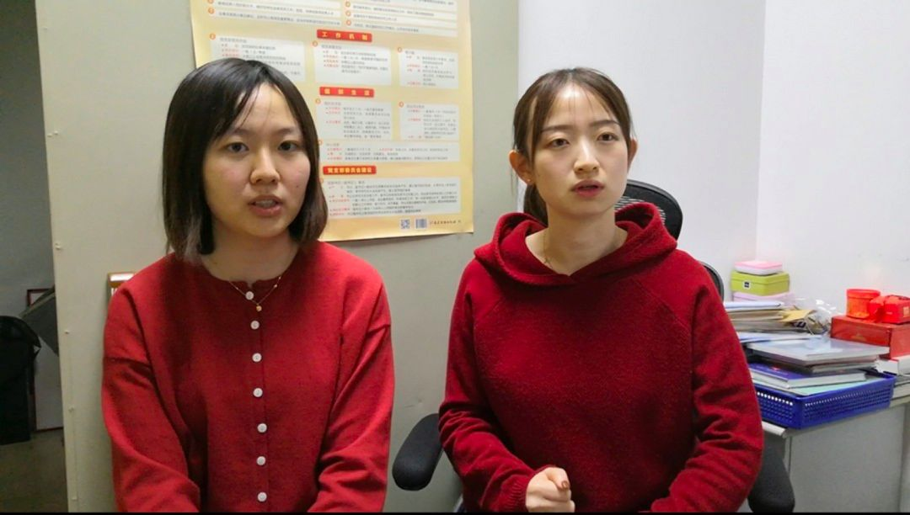
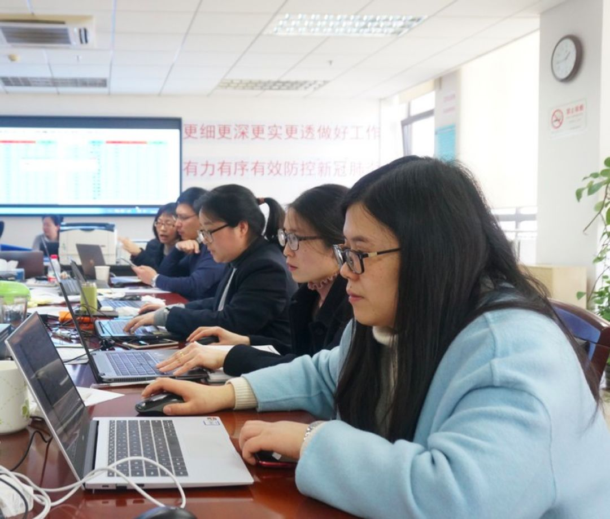

肺炎日记|1月31日：疾控、红会陷争议，防疫环节何处失守？
原文链接 备份链接 【财新网】（记者 黄蕙昭 综合）2020年的第一个月在争议中迈向尾声。防疫战滚滚硝烟下，“防控”和“救援”条线上的两大职能主体，今日正面临激烈的失职指控：一面是疾控中心发文披露新冠病毒早期流行病学数据，似早已获悉“人 …
流调的目的是获取被调查者的发病史、旅行史、接触史等信息，为分析疫情的传播路径、控制疫情进一步传播提供关键的依据。
记者 | 王 煜
交接完标本、脱下一整套防护装备，上海长宁区疾控中心的两名年轻的工作人员杨雨帆和蒋亭安走进食堂，这里的晚餐供应已接近尾声。这是1月30日的傍晚，两个小姑娘刚刚执行完一次对新冠肺炎疑似病例的流行病学调查（简称“流调”）和运送标本的任务。
这次回来算是赶上了晚餐时间的尾巴，而她们当天的待命时段是全天24小时。无论白天黑夜，只要辖区内相关医院有疑似病例的信息发来，她们就要立即全副武装赶往现场，走进隔离病房，与疑似患者近距离交流。疾控工作人员，或许是一线医护人员之外，与疫情距离最近的一群人。

1月26日，长宁区疾控中心工作人员（右一右二）与同仁医院医护人员在新冠肺炎流调现场 图：长宁疾控****
流调的目的是获取被调查者的发病史、旅行史、接触史等信息，为分析疫情的传播路径、控制疫情进一步传播提供关键的依据。例如，一旦疑似患者被确诊，疾控中心的工作人员就立即按照流调获取的信息，寻找确诊患者密切接触过的人员，对他们采取相应的医学观察等措施。
因此，调查中她们要做到尽量细致。疑似患者最近一段时间去过哪里、密切接触过哪些人、乘坐的交通工具的班次等，这些信息，了解得能多详细就多详细。碰到对方记不清楚的，她们还要想办法帮助对方尽量回忆。一次流调，通常要花上半小时到一小时，这还不包括穿脱防护装备的时间。
流调完成后，如果需要对疑似患者进行标本取样的，她们还要等待医院的取样完成，并换上新的一套防护装备，将标本送回疾控中心进行检测。目前，上海的区级疾控中心已经可以自行检测新冠肺炎疑似患者的标本，长宁疾控的微生物检验实验室24小时运转，尽快提供检测结果。

长宁区疾控中心工作人员穿戴防护装备，准备出发执行取样任务 摄影：王煜
长宁疾控中心副主任蔡恩茂说：平时流调任务的执行以传染病防制科的人员为主，他们是第一梯队；而这次的疫情防控任务重大，来自其他科室的第二梯队的人员也直接进入一线工作。
杨雨帆和蒋亭安就是平时的第二梯队成员。入职分别只有一年多、两年多的她们告诉《新民周刊》记者，刚刚结束的这次任务，是她俩第一次真正走进流调的现场。
“虽然我们之前都参加过很多次演练，但真正要面对实战，而且还是这么重大的疫情，心里还是有点紧张的，就是不停地提醒自己要细致，不要出错。”杨雨帆说。穿着防护服不透气，在护目镜里的视线也不是很清楚、不太看得清记录表格，这些都是她们要努力克服的。
谈到对于工作中感染病毒的风险是否害怕，杨雨帆说：“这本来就是我们应该去承担和面对的责任，怕也没有办法去怕的。”
蒋亭安说，家人知道她要去一线，一直嘱咐她好好保护自己，“所以我肯定要练好自己的技能，做好防护。”她说，家人也理解这是她的职责，需要她去做这件事时，她就一定要去做。
除了近几天担任流调的工作，前些天她俩也一直在数据组参与工作。“每天很忙，并没有时间去想太多其他的。”不过，她们还是相约在执行现场任务时，都穿上了红色的衣服。“我们希望能旺一点。”她俩笑着说。

1月30日晚，执行完流调和标本运送的任务，回到长宁区疾控中心的杨雨帆（右）与蒋亭安 摄影：王煜
两位小姑娘说，她们的勇气和信心还来源于同事的强力支持。“我们的领导、同事这些天都一直加班加点，有一位还几乎通宵连轴转。她不仅坚守岗位，还给我们总结出了非常实用的流调经验。”
她们说的那位“连轴转”的同事，是长宁疾控的余力。1月26日大年初二晚上大约10点半钟，值班的余力接到流调任务，立即赶往同仁医院。那个疑似患者是一位80多岁的老奶奶，气喘得很厉害，说一两句就要喘一会儿，对话过程比较慢。余力耐心地问完了所有问题，回到疾控中心，写完流调报告并通过审核后，已经是第二天凌晨3点多了。她抓紧眯了几个小时，天亮后的7点，她又穿上防护服、提着标本箱前往市疾控送样。
尽管如此，她还在开动脑筋，思考如何能把流调工作做得更好。余力平时就是中心里的“科普小达人”，有一手绘画和制作视频的“绝活”，她想到，可以试着把流调的整个流程做成小视频，分享给要去现场的伙伴们。
1月28日的晚上有了想法，第二天她就和同事们一起着手做。同事去流调地点同仁医院等现场踩点，回来后绘制平面草图，余力在这个基础上加工，很快视频就传到了同事们的手机里。同时，余力和同事还整理出了图文版的新冠流调“宝典”——流调SOP（标准处置程序）。
长宁区疾控中心新冠流调小分队自制的流调流程视频截图
《新民周刊》记者看到，这份“宝典”对流调的全部流程介绍非常详细，包括医院的哪个位置有怎样的设备、该走哪条通道、哪道门该怎么开，标本容器在中心的哪个位置领取，都记录得清清楚楚，所有重点内容都用突出的底色强调出来，还配上了许多图片。视频则专注于流调医院病房现场的事项，加上声音和动态元素，非常实用。这套图文和视频，已经成为长宁疾控流调小分队人手一份、出任务前的必学功课。
“这些天最难的就是睡眠不足，平均一天只能睡三四个小时。”余力说，长宁疾控的许多工作人员在今年的整个春节期间都没有一天休假。《新民周刊》记者在现场看到，长宁疾控的许多工作人员连续奋战，中心主任赵文穗、副主任蔡恩茂的办公室里都摆着一张折叠床，他们已经好几天睡在单位，没有回过家。

长宁区疾控中心的工作人员为抗击疫情连续奋战 摄影：王煜
“这次我真正感到自己能为大众做出贡献，感受到了自己作为一名疾控人的职业意义。我们还要为抗击疫情坚持下去。”余力说。
征集令
“战疫”成败，匹夫有责。
《新民周刊》现面向全国征集新冠肺炎采访对象和真实故事：
如果你是参与抗击新冠肺炎疫情的医护人员或其家属，我们希望聆听你的“战役”故事，也希望传达你的诉求。
如果你是确诊、疑似患者本人或家属，我们希望了解你和家人如何“抗疫”的过程，让外界了解你的真实经历。
如果你是疫情严重地区的普通市民，我们希望展现你的乐观，并倾听你所需的帮助。
如果你是公共服务人员或各类捐助者，我们希望看到你的“最美逆行”，记录下你的无私。
……
抗击新冠肺炎疫情，我们诚征对疫情了解的社会各界人士，提供相关线索，说出你的故事，让我们用新闻留存这一切。
《新民周刊》新冠肺炎线索征集值班编辑联系方式（添加时请简要自我介绍）：
周一：应 琛 微信号：paulineying0127
周二：金 姬 微信号：gepetta
周三：黄 祺 微信号：wxid_bf5mudid7oz322
周四：周 洁 微信号：asyouasyou
周五：孔冰欣 微信号：kbx875055141
周六：吴 雪 微信号：shyshine1105
周日：姜浩峰 微信号：jianggeladandong
新闻是历史的底稿，你们是历史的见证者。期待你的故事、你的线索！

▼
大家还都在看这些
▼
转载请在评论区留言，获得授权！
转载时，须注明作者、出处和微信号


原文链接 备份链接 【财新网】（记者 黄蕙昭 综合）2020年的第一个月在争议中迈向尾声。防疫战滚滚硝烟下，“防控”和“救援”条线上的两大职能主体，今日正面临激烈的失职指控：一面是疾控中心发文披露新冠病毒早期流行病学数据，似早已获悉“人 …
原文链接 备份链接 我住在汉口，是这次疫情的重灾区。那个被查出疫情源头的华南海鲜市场，就在火车站对面，离我家大概20公里。我希望疫情早日结束，对我们国家的经济影响小一些，所有人都能够平安和健康。 口述 | 小 玲 整理 | 沈 林 我叫小 …
原文链接 备份链接 世界卫生组织（WHO）总干事谭德塞在2020年1月30日宣布：新冠疫情的全球性暴发，已构成“国际关注的突发公共卫生事件”（PHEIC）。 谭德塞同时强调，这一宣布是基于新冠疫情在中国以外的发展情况，而非针对中国国内 …
原文链接 备份链接 作者 | 龚方毅 编辑 | 韩方航 毫无疑问，新型冠状病毒肺炎将重创中国今年一季度经济产出。 在空前严厉的防疫措施限制下，工厂停工，餐饮、住宿、航旅业萧条，各类线下实体生意遭遇毁灭性打击，现金流基本为零。 但各种税租不 …
原文链接 备份链接 记者 | 肖文杰、许冰清 编辑 | 陈 锐 1月30日发表于《新英格兰医学杂志》（NEJM)的一篇关于新冠病毒的论文将中国国家疾控中心变成舆论焦点。 这篇论文名为《新型冠状病毒感染肺炎在中国武汉的初期传播动力学》，由 …